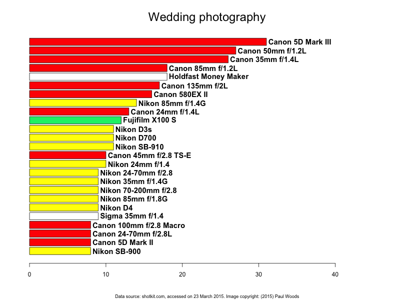
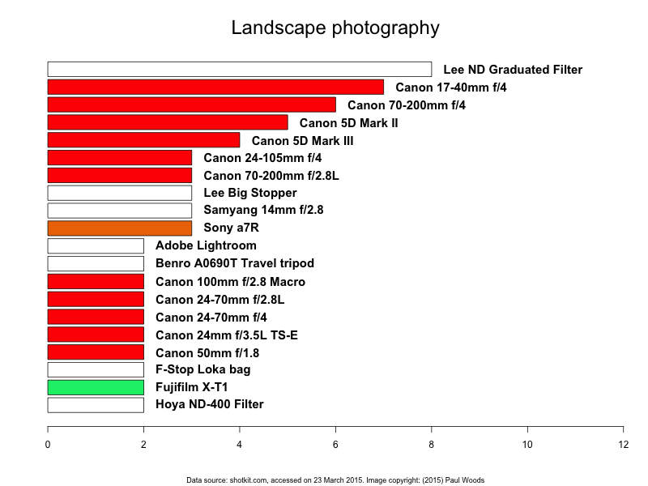
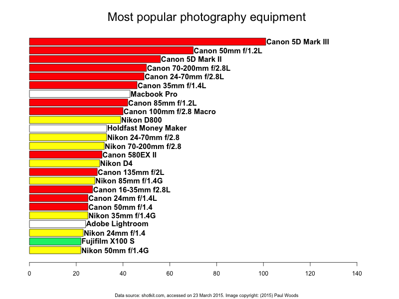

What's the most popular gear amongst professional photographers?
Shotkit.com is a website which opens up professional photographers' camera bags to show what equipment they use in their working lives. This is interesting not only to gear-heads, but also to average photographers who are looking for a better tool for the job, or to upgrade a piece of equipment. Each page on Shotkit.com contains an interview with a photographer, and usually a beautifully-shot photo of their camera bag contents.
I was thinking about what kind of equipment professional photographers used, and it struck me that Shotkit.com was a great repository of the latest and greatest gear. So I set about collating the information on the site, and putting together a few interesting graphics. Using a script written in R, I looked at different genres of photography and plotted the most popular gear for each genre.
Wedding photography

The professional wedding photography market is dominated by Canon, and particularly by its all-round winner of a DSLR, the Canon 5D mark III. To pair with this great camera body, pro photographers opt for a range of Canon prime lenses: 24mm f/1.4L, 35mm f/1.4L, 50mm f/1.2L, 85mm f/1.2L and the 135 f/2L. What an amazing lineup of lenses.
Nikon camera bodies lag surprisingly behind the pocketable point'n'shoot, the Fuji X100S. The Nikon D3S and D700, although excellent cameras, are veritably ancient in the fast-paced camera market. Nikon's latest additions, the D800, D810 and D750, don't show.
Special mentions should be given to a very popular gadget, the Holdfast Money Maker, which is a high-grade leather camera strap (priced at $200+), and a lens from a third-party manufacturer, the Sigma 35mm f/1.4 Art lens, which by all accounts is an excellent ensemble of glass.
Landscape photographers
Portrait, travel and commerical photographers also favour Canon equipment, whereas Sports photographers are more evenly spread in Canon and Nikon camps. Fashion photographers tend to favour the high resolution of the Nikon D800.
Interestingly, the most used piece of equipment amongst professional landscape photographers is not a camera or lens at all... it's a graduated filter, which equalises the exposure in the frame between a bright sky and not-so-bright landscape:

Also here we see the first appearance of a Sony camera, and again a good third-party lens, the Samyang 14mm f/2.8, which excels at astrophotography.
Summary
 Overall, the Canon dominance over the professional photographers of Shotkit.com is complete. The 5D Mark III body, partnered with Canon's L series lenses, outweighs the competition in the sample more than 2-to-1. Nikon's most popular offering is the D800 camera, with the excellent 24-70mm f/2.8 and 70-200mm f/2.8 lenses. Adobe Lightroom is the most popular software, more so than long-time favourite Adobe Photoshop.